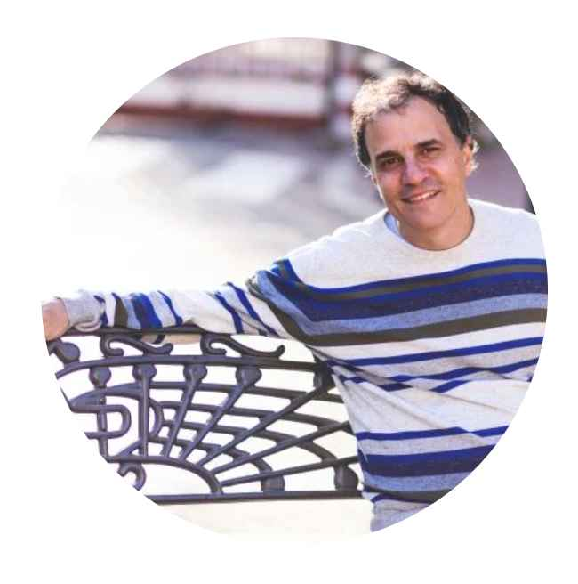

Introducción
“Puertas de Entrada: Lecturas para Introducirse a la Filosofía y la Literatura” desde la perspectiva del autor
Como escritor y apasionado lector, he decidido sumergirme en una nueva aventura literaria al explorar el vasto universo de la filosofía y la literatura. Mi elección se centra en el curso “Puertas de Entrada: Lecturas para Introducirse a la Filosofía y la Literatura”, ofrecido por la Academia La Central del Raval.
Desde los primeros días de mi trayectoria literaria, he apreciado el compromiso de La Central de acercar la lectura y los libros a la comunidad lectora. Este espacio cultural ha sido un faro que ha iluminado mi camino hacia la comprensión y aprecio de diversas expresiones literarias y humanísticas. La misión de reunir y seleccionar obras, manteniendo un equilibrio entre el comercio y la mediación cultural, resuena profundamente con mi propia búsqueda de conocimiento y creatividad.
La Academia La Central, como proyecto educativo de este espacio cultural, se presenta como el escenario perfecto para enriquecer mis perspectivas literarias y filosóficas. Su oferta formativa, que incluye cursos, gabinetes de lectura y talleres, es dirigida por docentes de prestigio ansiosos por compartir su saber hacer. Esta variedad de opciones me brinda la oportunidad de explorar diferentes facetas de la literatura y las humanidades.
El curso “Puertas de Entrada” se erige como mi elección predilecta en este viaje literario. La promesa de sumergirme en las lecturas de filósofos y escritores destacados, guiado por la experiencia de destacados docentes, resuena con mis propias aspiraciones creativas. Esta inmersión en el fascinante mundo de la reflexión y la creatividad va más allá de una serie de sesiones; es una invitación a integrar la filosofía y la literatura como compañeras inseparables en mi trayectoria literaria.
Este libro que estoy a punto de crear será un testimonio de mi travesía a través de “Puertas de Entrada”, capturando pensamientos, emociones y reflexiones. Mi objetivo es compartir con otros lectores el viaje transformador que se inicia con la elección de este curso, a través de estas páginas que se convertirán en un reflejo de mi propio crecimiento y exploración literaria.
Así, con entusiasmo y expectativas elevadas, me sumerjo en “Puertas de Entrada” con la certeza de que esta experiencia será una fuente inagotable de inspiración y conocimiento para mi obra por venir. ¡Bienvenidos a mi travesía literaria!
El curso
“Comencé a leer El mundo como voluntad y representación y me asaltó un violento deseo de conocerme, de socavarme a mí mismo” (F. Nietzsche).
Seleccionar los textos adecuados para introducirnos en la lectura de esos autores y autoras a quienes solicitamos cobijo y compañía, supone uno de los aprendizajes más importantes en la interminable tarea de aprender a leer.
¿Qué conjunto de aforismos e intempestivas podrán allanarnos el camino al Zaratustra? ¿Cómo reordenar el índice deEl Capital para no empantanarnos con sus levitas y sus varas de lienzo? ¿De qué manera podemos confeccionar un “Diccionario Weil” para mejor comprender sus conceptos de gracia y gravedad? ¿Qué cuentos de Kafka y de Woolf, qué poesías de Dickinson y de Rimbaud, qué dramaturgias de Beckett y de Lorca nos podrán dar la mano para cruzar la calle hacia las grandes novelas de la literatura universal (y viceversa)?
Programa
El programa lo conforman cuatro unidades temáticas, con una duración de dos sesiones cada una. Funciona como “menú a la carta”, del que se irán escogiendo las lecturas principales en función de los intereses comunes de los y las participantes. Los textos principales se leen en clase, ya que uno de los principios que rige el curso afirma que “leer es un acto colectivo”.
Unidad 1. Sospechosos habituales
Unidad 2. ¡Danzad, danzad, malditos!
Unidad 3. Flâneurs de ciudades invisibles
Unidad 4. En la salud y en la enfermedad
Bibliografía y filmografía general
El crepúsculo de los ídolos (F. Nietzsche).
El malestar en la cultura(S. Freud).
La gravedad y la gracia(S. Weil).
Vigilar y castigar(M. Foucault).
Mil mesetas(G. Deleuze).
La familia(J. Lacan).
Antropología estructural(C. Levi-Strauss)
La parte maldita(G. Bataille).
La escritura del desastre(M. Blanchot).
Mitologías(R. Barthes).
La sociedad del espectáculo(Guy Debord).
El pintor de la vida moderna (Ch. Baudelaire).
Iluminaciones(W. Benjamin).
La cultura de las ciudades(L. Mumford).
El eterno marido(F. Dostoievski).
Una habitación propia(V. Woolf).
Quienes se marchan de Omelas (Ú. K. Le Guin).
Martin Eden(J. London).
El papel pintado amarillo(Ch. P. Gilman).
Delicatessen (J. P. Jeunet y M. Caro, 1991).
Magnolia(P. Th. Anderson, 1999).
The hill(S. Lumet, 1965).
Hurlyburly(A. Drazan, 1998).
El docente

Pablo Nacach
Pablo Nacach (Buenos Aires, 1969) es un escritor, Doctor en Filosofía por la Universidad de Barcelona y Licenciado en Sociología por la Universidad de Buenos Aires. Tras su llegada a Barcelona en 1996, llevó a cabo su Tesis Doctoral bajo la dirección de Fina Birulés. Residió en Madrid entre 2001 y 2019, y desde entonces ha retornado a Barcelona.
Trayectoria Profesional
Pablo Nacach ha destacado como colaborador en reconocidos medios de comunicación, incluyendo los suplementos culturales Babelia de El País y Cultura/s de La Vanguardia, así como la Cadena Ser. Además, ha colaborado con prestigiosas editoriales como Debate, Alianza y Siruela.
Desde 2011, se ha dedicado a la coordinación de talleres de lectura y escritura en instituciones académicas y culturales de renombre, entre las que se incluyen la Universidad Carlos III de Madrid, la Universidad Autónoma de Madrid, la Universitat de Barcelona, la Universitat Politècnica de Catalunya, las bibliotecas Jaume Fuster y Gabriel García Márquez de Barcelona, Casa del Lector y Librería La Central de Madrid.
Ensayista y Publicaciones
Como ensayista, Pablo Nacach se ha especializado en el ámbito de la Sociología de la vida cotidiana. A lo largo de su carrera, ha publicado los siguientes libros:
- Las palabras sin las cosas. El poder de la publicidad (Lengua de trapo, 2004)
- Fútbol. La vida en domingo (Lengua de trapo, 2006)
- Máscaras sociales. Las relaciones personales en el mundo actual (Debate, 2008)
- Barcelona/Madrid. Sobrevivir a la ciudad (Península, 2010)
- ¡Fútbol! Mucho más que un juego (Siruela, 2016)
- Ver y maquinar. La emergencia de una nueva sensibilidad (Anagrama, 2019)
- Amor Maestro. Instrucciones de uso (Anagrama, 2020)
Más Información
Para obtener más información sobre Pablo Nacach y sus obras, puedes visitar su sitio web: www.pablonacach.com